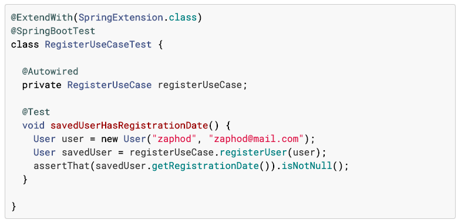
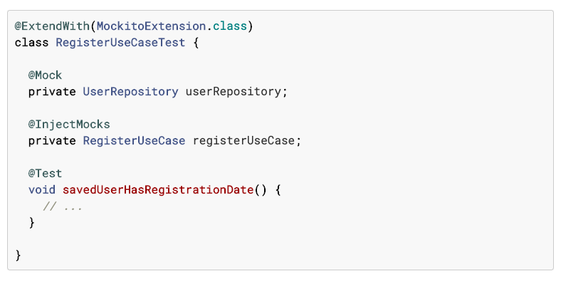
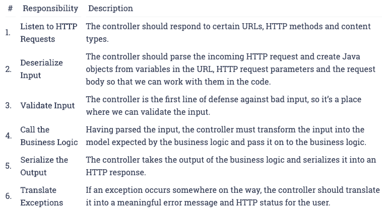
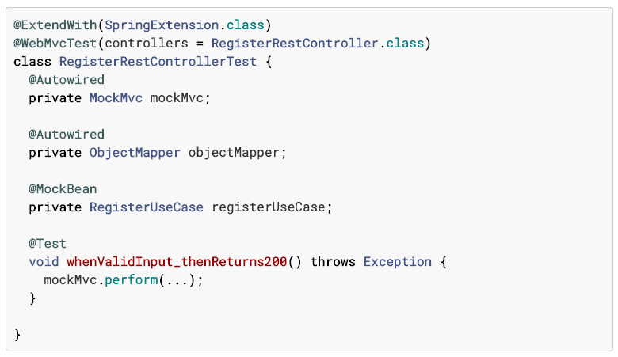
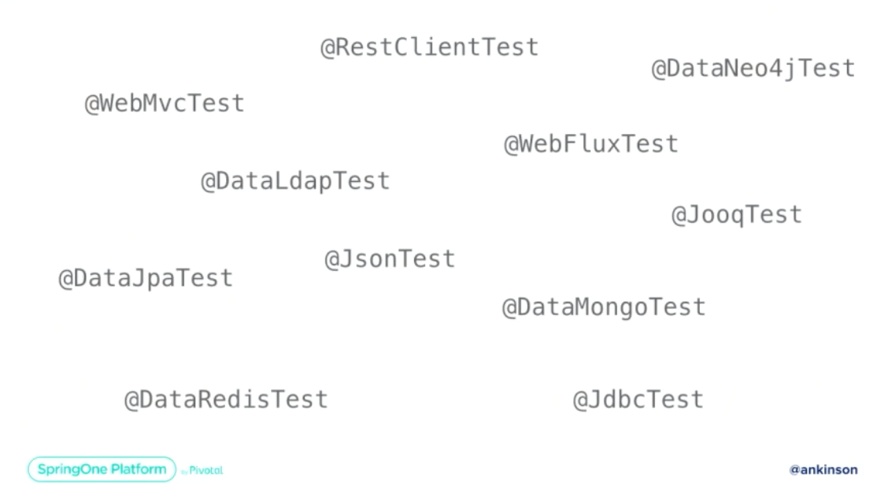

2019 Downtown Austin
Held at the Austin convention center
2020 Virtual
Swag/Charity


Sponsors
VMWare

Dell

Redis


Accenture

Pluralsight

AWS

Datadog

New Relic

Signal Sciences

Gradle

Heroku

IBM

Microsoft

mongoDB

Synk

Launch Darkly

softserve

JetBrains

More than a dozen others
And
Wait for it
Waiting ...
Are you ready?
okta

Learning Stations


- App Modernization
- Database and Machine Learning
- Pivotal Platform and Kubernetes
- Spring Technology
- Windows and .NET
Countries of people I met
- India
- Ireland
- Ukraine
- Denmark
- Germany
- Korea
- Japan
2019 VMWare Acquiring Pivotal
blog post2019 Themes
- Pivotal DevOps
- Spring Framework/Boot
- Reactive programming
- Event Driven (RabbitMQ, Kafka, Redis)
- Kotlin
- Testing
DevOps
- Pivotal Platform (PKS)
- Kubernetes
- Spinnaker CI/CD
- Monitoring Micrometer
Spring
- Spring React
- Spring Boot
- Spring Data JPA/JDBC
- Security (OAuth)
Reactive
- Spring React
- Dos and Don'ts
- RSocket Messaging
- R2DBC
Testing
- Spring
- Junit 5
- Mutation
2020 Themes
- Beginner-Friendly Spring
- Intermediate/Advanced Spring
- Architecture
- Cloud Native Platforms
- Agile Leadership
- Social Track
2019 SpringOne Conference YouTube channel
https://www.youtube.com/playlist?list=PLAdzTan_eSPRlQ8t4TU5c-AB4SHV939M62020 SpringOne Conference YouTube channel
https://www.youtube.com/watch?v=VRBvty0vwh8&list=PLgGXSWYM2FpNeJ37y4WMkkcN9koBrgsDWNetflix
See Taylor Wicksell and Tom Gianos at SpringOne Platform 2019
Netflix uses SpringBoot


Spring Framework 5.x
See the 5.3 YouTube recording
See the 5.2 YouTube recording
Spring Framework 5.0
- Java 8 / 9 and nullability revision
- Programmatic bean registration
- Core Reactor & RxJava support
- WebFlux & WebFlux.fn
- JUnit 5
Spring Framework 5.1
- Programmatic bean retrieval
- Logging revision
- WebFlux DSL enhancements
- Support for Hibernate ORM 5.3
Spring Framework 5.2
- Reactive transaction management
- RSocket messaging
- Kotlin coroutines
- WebMvc.fn
Spring Framework 5.3
- Binding support for Java 14 / 15 records
- JDBC & R2DBC support revision
- Spring MVC: path patterns, test client
Core APIs
Version 5.x runs on Java 8 ("touch almost every file")
Kotlin force nullability declarations for APIs
Not nullable by default so added @Nullable
Performance
Mostly about decreasing start up time
React MVC

React MVC
Switch the servlet request to the servlet container's async request
mode (servlet 2.1 feature).
Not as effecient as running in netty using the React stack.
Examples: server sent events; long running endpoints
Hence can mix and match react and imperative programming
React R2DBC
@Transactional

React R2DBC
<dependency> <groupId>org.springframework.boot</groupId> <artifactId> spring-boot-starter-data-cassandra-reactive </artifactId> <version>2.0.0.M3</version> </dependency>
RSocket

Spring Cloud
See the YouTube recording
Spring Cloud provides tools for developers to quickly build some of the common patterns in distributed systems.
Spring Cloud Function
See the YouTube recording
More and more support for functional programming

Spring Data JPA
See the YouTube recording
Personally I hate JPA

Spring Data JDBC
See the YouTube recording
A better presentation IMO
Spring Data JPA Negatives
JPA is complex
Lazy Loading
Dirty Checking
Session / 1st level cache
Proxies for Entities
Spring Data JDBC Design Choices
No caching / sessions / proxies
Very simple & limited & opinionated ORM
1 to N mapping OK
No many-to-many mappings
Spring Data JDBC
Aggregate is a pattern in Domain-Driven Design. A DDD aggregate is a cluster of domain objects that can be treated as a single unit.
@Repositories work on Aggregates
Write Less Code with Kotlin
See the YouTube recording
I am intrigued
Runs on JVM


WebAssembly
See the YouTube recording
Niche solution for intensive processing in browser instead of on server
Building Better Monoliths
See the YouTube recording
Use a monolith but enforce modules by packages
(a.k.a modulith).
Would avoid Linkerd problems :)
Accessibility (I11y)
See the YouTube recording
Screen readers (e.g. JAWS) do not know when JavaScript changes DOM. To alert screen readers of a change the focus should be moved to top of page and change title.
New Java Features
See the Keeping Up with Java YouTube recording
See the Spring Framework 5.3 YouTube recording
Azul has spoken at Austin Java User Group (AJUG). Pretty much the same presentation.


There was a session "Better than BASH - Scripting & Automation with Kotlin"
See the YouTube recording
Kotlin can run natively (e.g. linux). See Kotlin/Native for Native
JUnit 5
See the YouTube recording
Just a ton of stuff
Nonstop for 70 minutes. This can be a presentation all by itself.


Mutation Testing: Case Studies
See the YouTube recording
Test your tests

Testing Spring Boot Applications
See the YouTube recording
What happens if we don't test

Using Spring In Unit Tests
DO NOT bring up the entire Spring application in Unit Tests
- Insane overhead (slow tests)
Instead of this
We do this
Using Spring In Controller Tests
Controllers have a lot of responsibilities
@WebMvcTest
- Separate controller from business logic
- Only loads necessary Spring beans (not the entire application)
- We’re doing this in V2 as Unit Tests in a lot of our services
@WebMvcTest

Other Splice Tests

Integration Testing
Test a service that integrates with other resources (services, databases, ..)
How To Test Boundry Cases
MockRestServiceServer
RestTemplate restTemplate = new RestTemplate()
MockRestServiceServer server = MockRestServiceServer.bindTo(restTemplate).build();
server.expect(requestTo("http://..."))
.andRespond((response) -> { throw new ResourceAccessException(
new ConnectException("Connection reset")); });
Testcontainers
testcontainers.orgTestcontainers is a Java library that supports JUnit tests, providing lightweight, throwaway instances of common databases, Selenium web browsers, or anything else that can run in a Docker container.